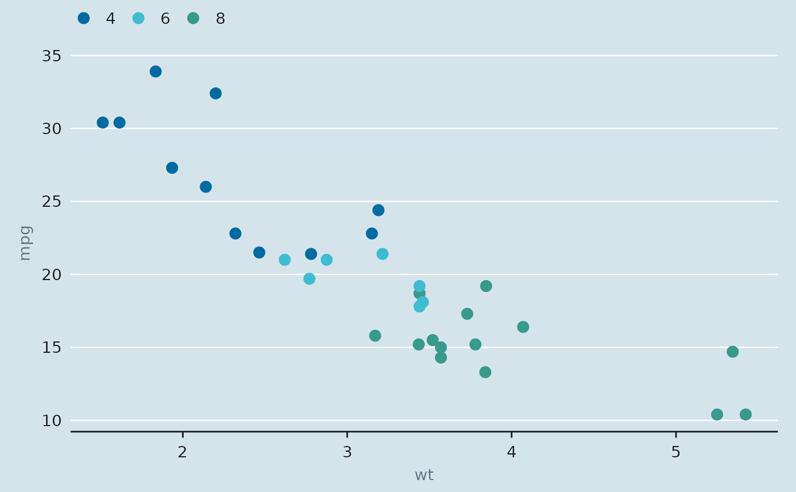

Discrete scales draw from the categorical palette in order; continuous scales interpolate a sequential or diverging ramp.
Usage
scale_colour_econ(palette = "main", reverse = FALSE, ...)
scale_color_econ(palette = "main", reverse = FALSE, ...)
scale_fill_econ(palette = "main", reverse = FALSE, ...)
scale_colour_econ_c(palette = "blues", reverse = FALSE, ...)
scale_color_econ_c(palette = "blues", reverse = FALSE, ...)
scale_fill_econ_c(palette = "blues", reverse = FALSE, ...)Arguments
- palette
Palette name, see
econ_pal().- reverse
Reverse the colour order?
- ...
Passed to
ggplot2::discrete_scale()orggplot2::scale_colour_gradientn().
Examples
library(ggplot2)
ggplot(mtcars, aes(wt, mpg, colour = factor(cyl))) +
geom_point(size = 3) +
scale_colour_econ() +
theme_econ()
